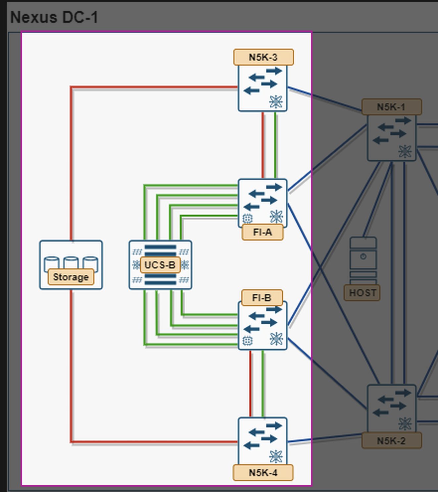

5. Module 4 — UCS Manager FC and FCoE (4.3.a)¶

SAN aspect of Nexus DC-1: N5K-3/N5K-4, FI-A/FI-B, UCS-B, and Storage highlightedObjective: stand up the actual SAN data path through UCS Manager, in both native-FC and FCoE flavors, and prove blades can FLOGI. This is the same SAN-side path highlighted above, from the blade's vHBAs through the FIs to the SAN core switches and the array.
5.1 Task 4.1 — Global FC Switching Mode¶
SAN > SAN Cloud > Fabric A/B, confirm End Host Mode (NPV-like, default and recommended) versus Switch Mode (FI participates in FSPF like a real fabric switch — rarely used, but be ready to explain when Switch Mode is required: e.g. when you need the FI to originate zoning itself rather than delegating to the upstream core, or when a port needs to act as a direct-attached FC storage port, which is only valid in Switch Mode). On a fresh install this should already read End Host Mode — leave it alone unless your scenario specifically calls for Switch Mode.
Warning
If you do change it, treat it like the unified-port conversions in Module 3: switching FC mode is disruptive and reboots the Fabric Interconnect, so it needs a maintenance window, not a live change.
5.2 Task 4.2 — Confirm VSANs and FCoE VLAN Mapping¶
SAN > SAN Cloud > VSANs — all four VSANs should already exist here from Module 1, Task 1.1. This task is about confirming the mapping is correct, not creating them fresh:
- VSAN 100 (
SAN-A-Boot) → FCoE VLAN 1000, Fabric A. - VSAN 101 (
SAN-A-Data) → FCoE VLAN 1001, Fabric A. - VSAN 200 (
SAN-B-Boot) → FCoE VLAN 2000, Fabric B. - VSAN 201 (
SAN-B-Data) → FCoE VLAN 2001, Fabric B.
These VSAN IDs must match what you configured on N5K-3/N5K-4 in Module 2 (Task 2.3) — both VSANs per fabric, not just the boot one. Mismatched VSAN IDs are the single most common reason FLOGIs never appear upstream.
5.3 Task 4.3 — FC/FCoE Uplinks and Port Channels¶
Assign the uplink ports/port-channels from Module 2 to the correct VSANs under SAN > SAN Cloud > Fabric A/B > FC Uplink Ports (or FCoE Uplink Interfaces) — the Fabric A uplink needs both VSAN 100 and VSAN 101 assigned, the Fabric B uplink needs both VSAN 200 and VSAN 201. A single uplink can carry more than one VSAN (that's what trunking it in Module 2, Task 2.3 was for); don't create a second physical uplink per VSAN unless your design specifically calls for one.
5.4 Task 4.4 — vHBAs in the Service Profile¶
Confirm (from Module 1) each service profile has all four vHBAs correctly placed: vHBA0 → VSAN 100 → Fabric A (boot), vHBA1 → VSAN 200 → Fabric B (boot), vHBA2 → VSAN 101 → Fabric A (data), vHBA3 → VSAN 201 → Fabric B (data).
5.5 Task 4.5 — Verify FCoE Encapsulation (if used)¶
This is an alternative to Task 2.3's native-FC F-port config, not an addition to it — use whichever matches your actual uplink type. If the FI-to-N5K SAN uplink is FCoE rather than native FC, confirm FIP snooping and the virtual Fibre Channel interfaces on the N5K side — one vfc per VSAN on that fabric, both bound to the same underlying Ethernet trunk:
feature fcoe
vlan 1000
fcoe vsan 100
vlan 1001
fcoe vsan 101
! the underlying Ethernet interface (or port-channel) must already be a trunk
! carrying both FCoE VLANs before you bind a vfc to it — this is separate from
! the LAN-side trunk config in Task 2.1, even if it's the same physical interface
interface Ethernet1/1
switchport mode trunk
switchport trunk allowed vlan 1000,1001
interface vfc1
bind interface Ethernet1/1
no shutdown
interface vfc2
bind interface Ethernet1/1
no shutdown
show vfc
show fcoe database
(Fabric B mirrors this on N5K-4 with VLAN 2000/VSAN 200 and VLAN 2001/VSAN 201.)
Verify (either flavor):
show flogi database
show npv flogi-table ! run from the FI's NX-OS shell: connect nxos {a|b}, then this command
Each associated blade's vHBA should FLOGI in with a WWPN drawn from your Module 1 WWPN pool.
Check yourself
If a blade's vHBA never FLOGIs, list the four places you'd check in order (VSAN match, uplink port assignment, physical link/port role, service profile vHBA placement) before assuming a hardware fault.